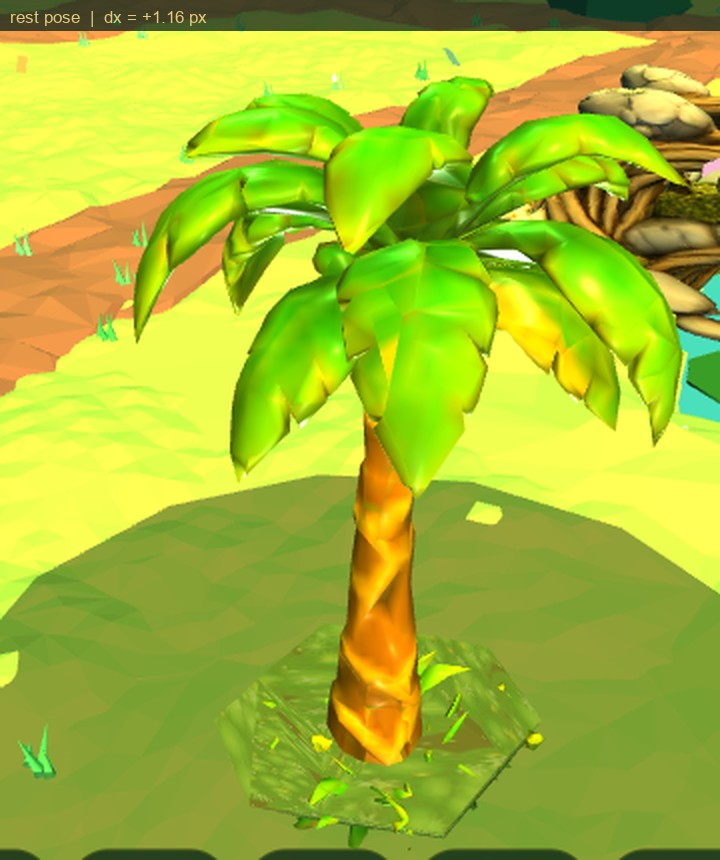
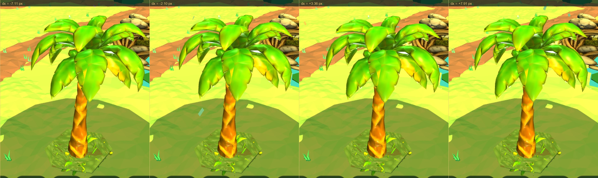
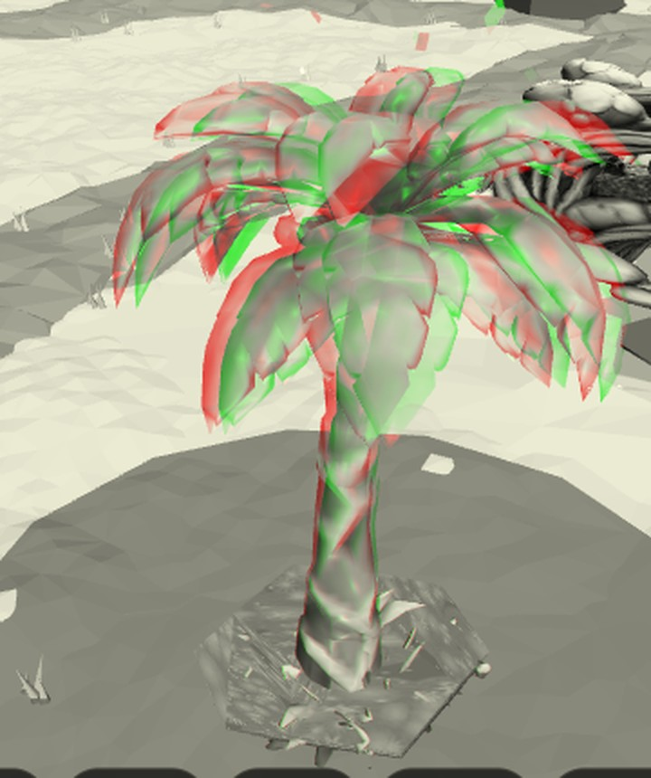
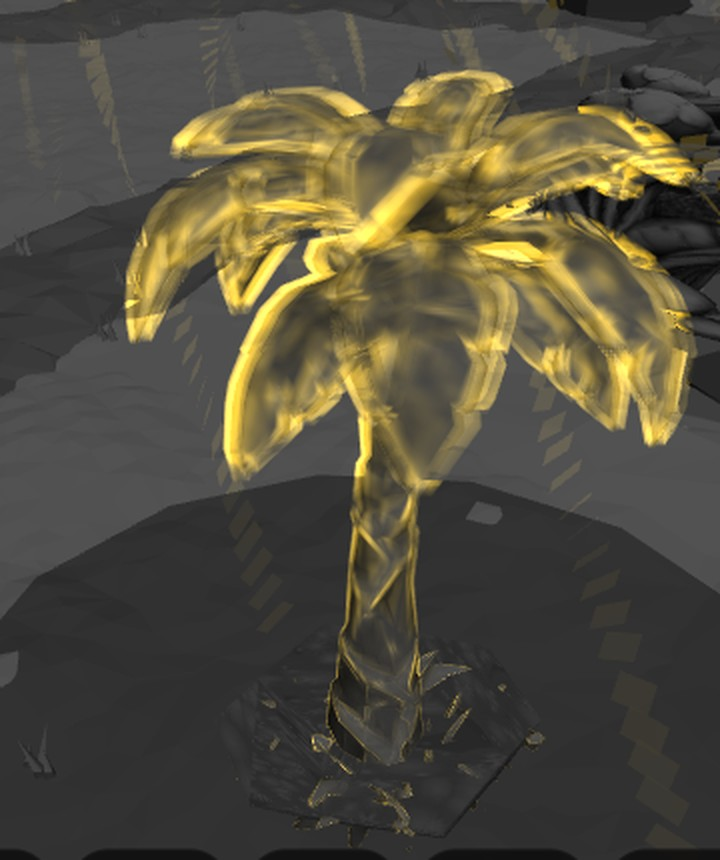
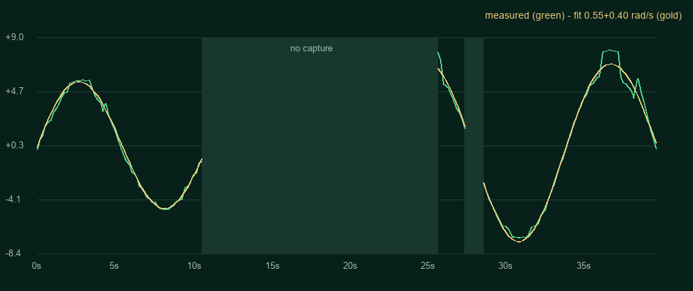
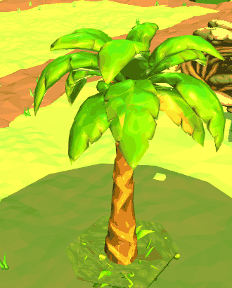

onBeforeCompile، والقاعدة لا تتحرك. الحلّ إجرائي مؤقت لحين الريج (B8)،
لكنه مُقاس بالبكسل ومُثبت بالعين — مرّتين: مرة سقط فيها المشهد، ومرة بعد إصلاح
الشادر.
البند ٩٫٢ كان مكتوبًا كـ«ريج وعظام ثم AnimationMixer» (B8). والريج
غير ممكن على الملفات الحالية: كل ملفات النخيل والشجر شبكة واحدة
بلا هيكل ولا مقطع حركة، ولا تُضاف عظام لملف جاهز من داخل Dart — يلزم إعادة تصدير
من Blender. لذلك نُفِّذ البديل الذي نصّت عليه خطة B8 نفسها: «تمايل إجرائي في حلقة
الرسم عبر onBeforeCompile لتشويه القمم حسب الارتفاع»، بشرط أن يُقاس
لا أن يُدَّعى.
الإمالة الكاملة بدت أرخص، لكنها تسقط لسبب هندسي: fitModelToGround
يضع محور الموديل داخل المجسّم، لا عند قاعدته. فإمالة الطفل تُزيح
قاعدته عن الأرض وتجرّ خلفها الظل وحلقة الزينة والكومة العشبية. البديل المنفَّذ:
إزاحة رؤوس x/z بوزن يصفر عند أدنى نقطة ويبلغ واحدًا عند القمة، فالجزء الملامس
للأرض لا يتحرك ببناء الصيغة نفسها.
lib/three/model_sway.dartالدالة installModelSway تستبدل #include <begin_vertex> في الشادر:
float swayH = clamp((position.y - uSwayBase) / max(uSwaySpan, 0.0001), 0.0, 1.0); float swayBend = pow(swayH, 2.0); float swayPhase = modelMatrix[3][0] * 0.7 + modelMatrix[3][2] * 1.3; transformed.x += sin(uSwayTime * 0.55 + swayPhase) * uSwayAmpX * swayBend; transformed.z += cos(uSwayTime * 0.40 + swayPhase * 1.7) * uSwayAmpZ * swayBend;
| القرار | القيمة | السبب |
|---|---|---|
| سعة النخيل | 0.018 من ارتفاع الموديل | ٪١٫٨ من نخلة ٩ وحدات ≈ ٠٫١٦ وحدة |
| سعة شجر المكافآت | 0.012 | تيجانه عريضة، ونفس النسبة تعني قوسًا أطول |
| سعة أشجار البيئة | 0.010 | ٤٠ شجرة خلفية: تتنفّس ولا تلفت النظر |
| المحور العرضي | 0.62 | تمايل بيضاوي لا خطّ واحد |
| السرعتان | 0.55 · 0.40 راد/ث | دورتان ≈١١٫٤ث و≈١٥٫٧ث |
| وزن الارتفاع | pow(h, 2.0) | الجذع السفلي ساكن تمامًا تقريبًا، والسعف هو المتحرك |
| الطور | من modelMatrix[3] | نسختان متجاورتان لا تتزامنان، بلا uniform لكل نسخة |
| الساعة | ثوانٍ منذ بدء المشهد | طابع Unix (١٫٧×١٠⁹) خطوة float32 عنده ≈٢٥٦ث فيتجمّد التمايل |
| مفتاح البرنامج | jannati/sway/v3 | يُرفَع مع أي تعديل GLSL، وإلا بقي الشادر القديم في الكاش |
_styleModelChild لنسخ الـGLB من
palmTree وtree (المكافآت والزينة)، وفي
_buildNatureIsland للشبكات الأربع birch_a/b و
tree_a/b قبل الاستنساخ — المادة مشتركة بالمرجع، فبرنامج واحد يخدم
النسخ الأربعين. البديل الإجرائي والمباني والكنوز والجبال والصخور خارج النطاق.
أول بناء ويب نجح، والاختبارات الـ١٠١ كلها خضراء، ثم فتحتُ المشهد فلم يتحرك شيء أصلًا: لا نخلة ولا ماء ولا كاميرا. سجلّ المتصفح كان صريحًا:
ERROR: 0:581: 'pow' : no matching overloaded function found
Error
at Object.ab (main.dart.js:4322:30)
at a1d.fj (main.dart.js:122625:6)
السبب سطر واحد في الشادر: pow(swayH, 2). في Dart الرقم
2.0 هو double، لكن dart2js يطبع الرقم كما
يراه JavaScript: 2 بلا فاصلة. وGLSL لا يملك تحميل
pow(float, int) — فيه pow(float, float) فقط، ففشل ترجمة
الشادر. وبما أن الاستثناء وقع داخل render()، لم يُعَد جدولة
requestAnimationFrame فتوقّف animate() عن الدوران،
وتجمّد المشهد كله وليس السعف وحده.
2.0 فيمرّ، وdart2js
يرى 2 فيسقط. أي ثابت رقمي يدخل نص GLSL يمرّ الآن عبر
glslFloat() الذي يضمن الفاصلة العشرية:
'${value.toInt()}.0' للأعداد الصحيحة، و'$value' لغيرها.
المفتاح رُفع من v2 إلى v3 لأن الكاش يحتفظ بالبرنامج
المترجم، واختبار pow(swayH, 2) السلبي يحرس النص المُولَّد نفسه.
النخلة وُضعت في مركز الكادر عند أقصى تقريب (مسافة ≈١٨، ارتفاعها على الشاشة ≈٣٦٥px، الكادر ٤٩٢×٦٢٩ CSS). صُوّرت ١٣٠ لقطة على دفعتين، وزمن كل لقطة مأخوذ من تاريخ تعديل ملفها لا من افتراض انتظام الدفعات: الدفعتان تفصلهما فجوة ≈١٦ث. ثم قيست الإزاحة الأفقية لكل منطقة بمطابقة طورية تحت البكسل، مقابل الإطار الأول.
| المنطقة | المدى (px) | الانحراف المعياري | الحكم |
|---|---|---|---|
| قمة التاج (السعف) | ١٥٫١٤ | ٤٫٤٩ | تمايل واضح |
| قاعدة الجذع على الكومة | ٠٫٢٤ | ٠٫٠٨ | ساكنة عمليًا |
| الجسر (مرجع ثابت) | ٠٫٠٧ | ٠٫٠١ | الكاميرا لم تنزح |
ومطابقة الإشارة على التردّدين المكتوبين في الشادر نفسه — 0.55
و0.40 راد/ث أي دورتان ١١٫٤ث و١٥٫٧ث — تعطي اتساعًا
٦٫٠٥px للمحور x و١٫٣٦px للمحور z، بمعامل تحديد
R² = 0.99. أسوأ حالة جمع ١٤٫٨px، والمقيس ١٥٫١px.
والتحقق من الصيغة: 0.018 × 9 وحدات = 0.162 وحدة، والمقياس ≈٤٠px
للوحدة، أي ≈٦٫٥px اتساعًا في المستوى — و٦٫٠٥px هي المسقطة على الشاشة. الرقم
المقاس هو الرقم المحسوب، لا رقم آخر يشبهه.





0.55 و0.40 راد/ث (ذهبي): R² ٠٫٩٩.
الشريط الداكن فجوة التصوير بين الدفعتين — والخط مقطوع عندها كي لا تُقرأ حركة.
التعديل لا يضيف رسمًا ولا خامة ولا draw call: أربعة uniforms وsin/
cos لكل رأس، والشادر لا يعمل إلا على نسخ النخيل والشجر.
requestAnimationFrame أعطى ١٫٢ إطار/ث على الرئيسية أيضًا،
و١٫٥–٢ داخل المشهد — أي أن Chrome يخنق الإطارات في هذا التبويب، والفرق بين
الشاشتين ليس دليلًا على تكلفة المشهد. الحكم النهائي يحتاج جهازًا حقيقيًا
(وفحص Impeller على أندرويد)، وقد سُجّل ذلك في PROJECT.md.
| الملف | التغيير |
|---|---|
lib/three/model_sway.dart | جديد — الثوابت وglslFloat والشادر والتثبيت (١٨٦ سطرًا) |
test/model_sway_test.dart | جديد — ٥ حراسات: الـuniforms، القاعدة، الفاصلة العشرية في GLSL، النسب والمفتاح، والمجموعة الفارغة |
lib/screens/jannati_3d_screen.dart | import · _swayClock وبدايته · تثبيت في _styleModelChild · تحديث مرة واحدة في render() |